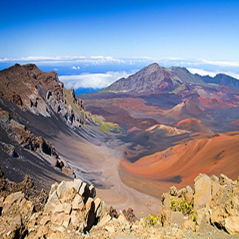

Travel for Good
“Haleakala National Park”
Haleakalā is a place unlike any other on Earth. As a volunteer, you’ll receive free transportation to the summit of Haleakalā and free admission to Haleakalā National Park where you’ll work alongside a Certified Naturalist and Haleakalā Park staff to remove invasive plant species or help with other projects to preserve this park’s native ecosystem. Transportation is provided from Pacific Whale Foundation Ocean Store in Ma’alaea (meet at 7:30am on Saturday) and the Tavares Community Center in Pukalani (meet at 8am). This volunteer activity takes approximately seven hours, including transportation to and from the park. Bring warm clothes, long pants, closed-toe shoes, water, sunscreen, and lunch. Visit the Haleakalā Park website.